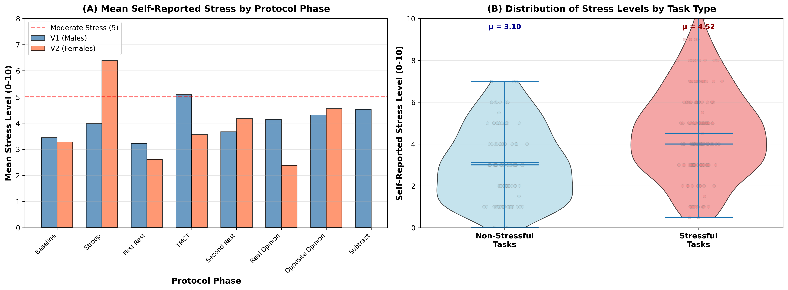
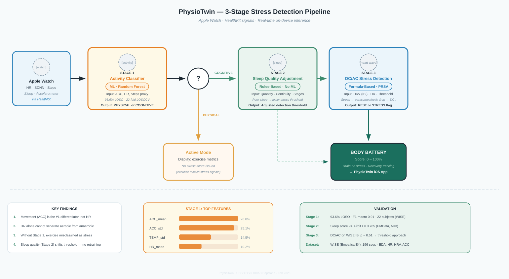
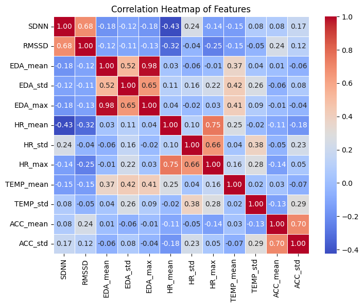

A 3-stage pipeline that separates exercise from stress, adjusts for your sleep, and scores your stress against your own baseline — not someone else's.
Smartwatches like the Apple Watch measure heart rate and HRV, but these signals are noisy: a fast heartbeat during a jog looks identical to one caused by a stressful meeting. Current tools either ignore this or rely on ML models that top out around 56% accuracy.
PhysioTwin takes a different approach — a 3-stage hybrid pipeline that filters out physical activity, adjusts for sleep quality, and computes a personalized HRV stress score based on your own baseline. The result is a "Body Battery": a simple 0–100 score that drains when you're stressed and recovers when you're calm, grounded in peer-reviewed science.
Wearable stress features conflate exercise with stress and use one-size-fits-all thresholds that don't account for individual differences or sleep quality.
A 3-stage hybrid pipeline: ML for activity gating, rule-based sleep adjustment, and signal-processing for personalized HRV stress scoring.
A Body Battery energy score (0–100) that anyone can understand, with recovery recommendations validated through real biometric feedback.

Figure 1 — Self-reported stress across WISE dataset protocol phases. Cognitive tasks (Stroop/TMCT) show significantly elevated stress vs. baseline, confirming label validity of our training data.
Our pipeline processes wearable sensor data in three sequential stages. Each stage solves a specific problem that the next stage depends on — you can't score stress accurately without first removing exercise artifacts and accounting for sleep.

Full architecture — Apple Watch → Stage 1 ML → Stage 2 Rules → Stage 3 Formula → Body Battery
The first stage detects whether you're physically active. If you're exercising, we skip stress scoring entirely — your elevated heart rate during a run isn't stress, and treating it as such would produce false alarms.
We trained a Random Forest classifier on accelerometer and heart rate data from 22 subjects in the WISE dataset. The model uses 4 engineered features and achieves 93.6% Leave-One-Subject-Out (LOSO) accuracy, meaning it generalizes well to users it hasn't seen before.
The classifier distinguishes between cognitive (sitting) and physical (treadmill/sprint) activity states. It's exported to CoreML for on-device inference on Apple Watch.
This gating step is critical: Bonneval et al. (2025) showed that HRV measurements have up to 93% error during physical movement, making any stress score computed during exercise meaningless.
Feature Importance
2-class RF model (4 features) — movement dominates at 79.9% combined importance
Last night's sleep quality adjusts how sensitive your stress detection is today. If you slept poorly, your body is more vulnerable to stress — we lower the threshold to reflect that.
We use rule-based logic rather than ML for this stage because sleep-stress relationships are well-established in the literature and don't require learning from data.
Sleep duration and quality scores (from HealthKit or Fitbit) are mapped to a threshold modifier that shifts the stress sensitivity for the day. Short or fragmented sleep results in a lower threshold — meaning milder physiological signals are flagged as stress.
This is supported by Apple's 2024 research showing that behavioral sleep data improves physiological predictions.
The final stage computes your actual stress score by analyzing heart rate variability patterns and comparing them against your own personal baseline — not a population average.
We compute three HRV metrics from RR intervals (the time between heartbeats):
DC/AC — Deceleration/Acceleration Capacity via Phase-Rectified Signal Averaging (Bauer 2006). These were identified by Velmovitsky et al. (2022) as the #1 and #2 most important stress features on Apple Watch data.
SDNN — Standard deviation of RR intervals. Robust to the data gaps typical of wrist-worn sensors (Hernando 2018).
RMSSD — Root mean square of successive RR differences. Captures short-term parasympathetic activity.
These metrics are compared against a rolling personal baseline built from each user's own calm-state data, producing a 0–100 stress score that feeds the Body Battery.
We trained and validated our activity classifier on the WISE dataset — 22 subjects performing controlled activities (cognitive, aerobic, anaerobic) while wearing wristband sensors. Segmenting the physiological signals using sliding windows, we built a model that reliably separates physical activity from cognitive states.

Figure 2 — Feature correlation matrix (WISE dataset). ACC features show low correlation with HR and HRV, confirming they carry orthogonal signal and justify their combined use in Stage 1.
The WISE (Wearable Stress and Affect Detection) dataset contains recordings from 22 participants wearing Empatica E4 wristbands through lab protocols: Baseline (REST), Stroop/TMCT cognitive tasks (STRESS), Treadmill walking (AEROBIC), and Sprint intervals (ANAEROBIC).
Signals include heart rate, 3-axis accelerometer, electrodermal activity (EDA), skin temperature, and inter-beat intervals (IBI) for HRV computation. Sourced from PhysioNet.
The end result of our pipeline is the Body Battery — a single energy score that drains throughout the day as stress accumulates and recovers during calm periods. Exercise drains it too, but is tracked separately and isn't mistaken for stress.
Our activity classifier achieved 93.6% LOSO accuracy, confirming that exercise can be reliably separated from cognitive states using wrist-worn sensor data alone. This is the foundation that makes the rest of the pipeline possible.
For stress scoring, we found that DC/AC values were not statistically significant on the WISE dataset for single-snapshot REST vs. STRESS classification (p > 0.05). This is consistent with published findings — Bahameish et al. achieved only F1=56% for Stress vs. Neutral using similar one-shot approaches. This result actually validates our hybrid design: rather than trying to classify stress from a single reading, we track HRV changes over time relative to each person's own baseline.
PhysioTwin demonstrates that hybrid pipelines — combining ML for what it does best with established physiological formulas — can outperform pure data-driven approaches for stress detection, especially with limited training data. By gating on activity, adjusting for sleep, and personalizing to each user's baseline, we avoid the pitfalls that have limited previous work.
The Body Battery gives users an intuitive energy score they can act on immediately, while the system closes the loop by measuring recovery through HealthKit — moving from detection to intervention to validation. Future work includes longitudinal field studies with real Apple Watch users and expanding the sleep modulation stage with more granular sleep architecture data.
Data & Modeling
App Design & Product
Modeling & System Design
Data & Modeling
Data & Modeling
Chief Visionary Mentor
Angel Investor & Executive Advisor
Capstone Project — Behavioral Stress Detection using Wearable Digital Twins